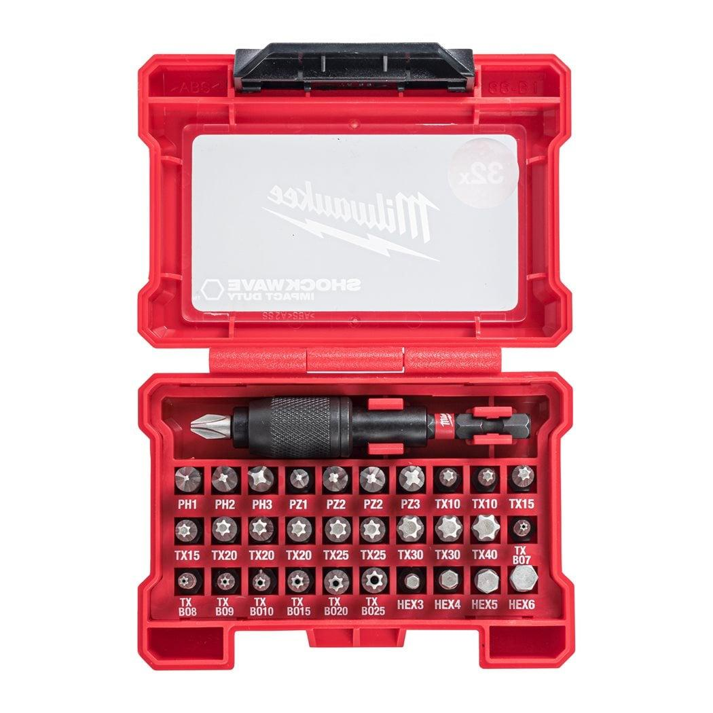
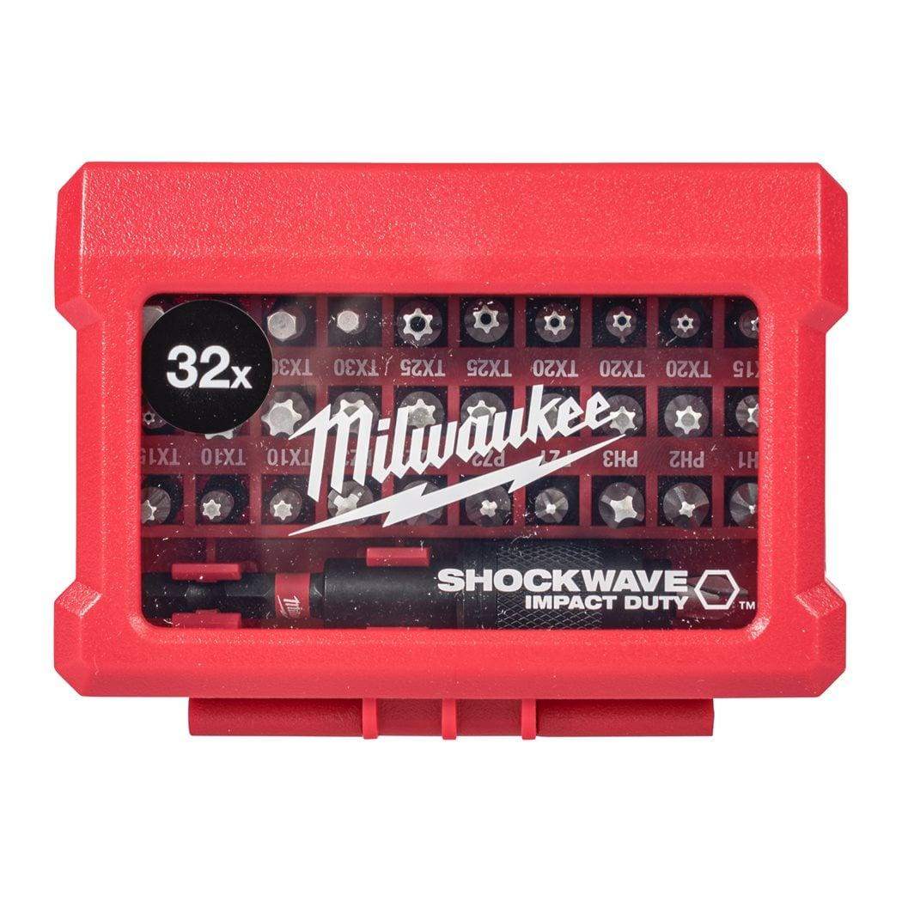
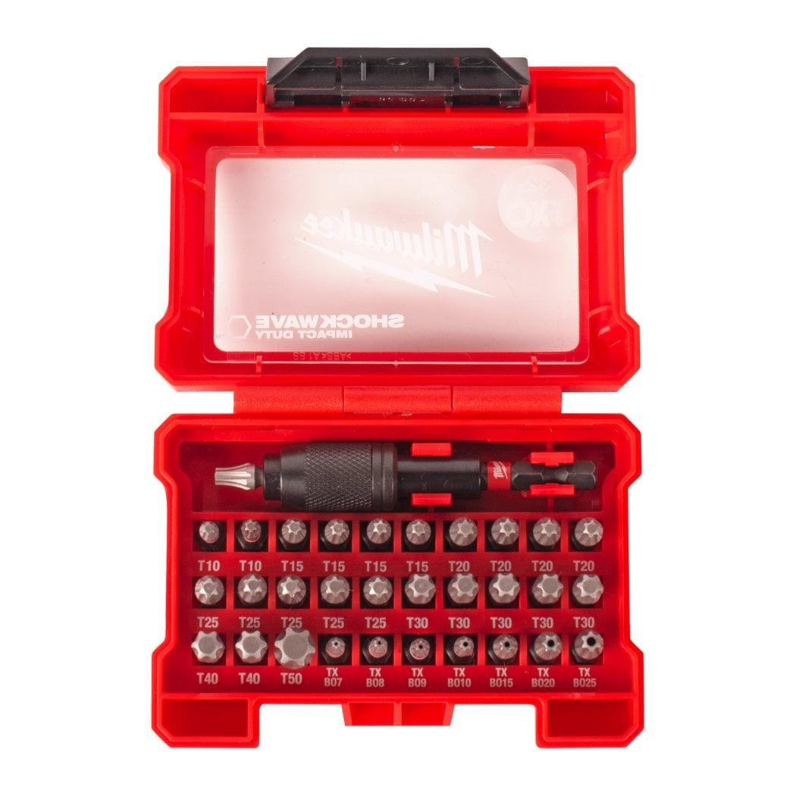

4932464240



| Contents | SHOCKWAVE™ screwdriving bits: 31 x 25 mm length: 1 x PH1 / 2 x PH2 / 1 x PH3, 1 x PZ1 / 2 x PZ2 / 1 x PZ3, 2 x TX10 / 2 x TX15 / 3 x TX20 / 2 x TX25 / 2 x TX30 / 1 x TX40, 1 x TX BO7 / 1 x TX BO8 / 1 x TX BO9 / 1 x TX BO10 / 1 x TX BO15 / 1 x TX BO20 / 1 x TX BO25, 1 x Hex 3 mm / 1 x Hex 4 mm / 1 x Hex 5 mm / 1 x Hex 6 mm. 1 x SHOCKWAVE™ locking bit holder ¼″ Hex reception 73 mm long |
| Pack quantity | 32 |